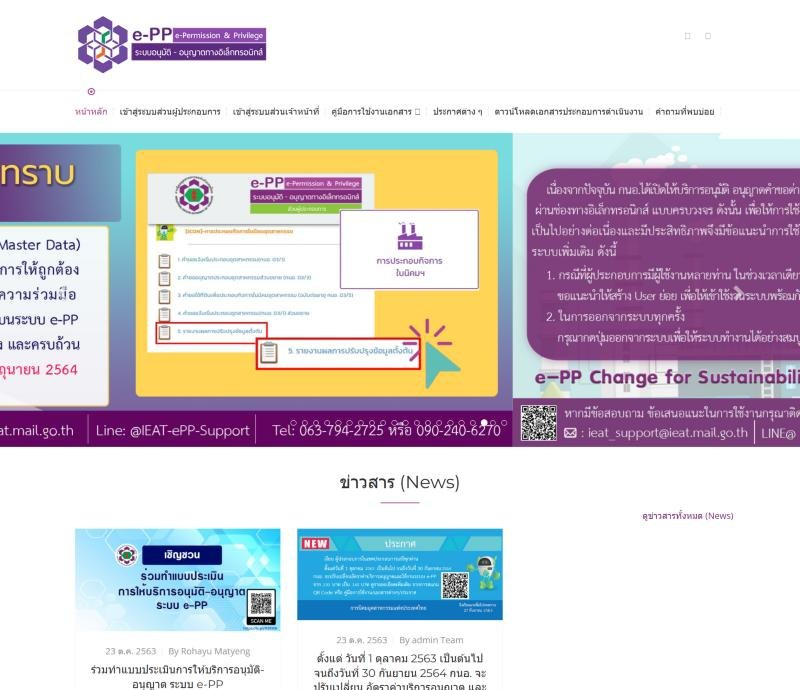
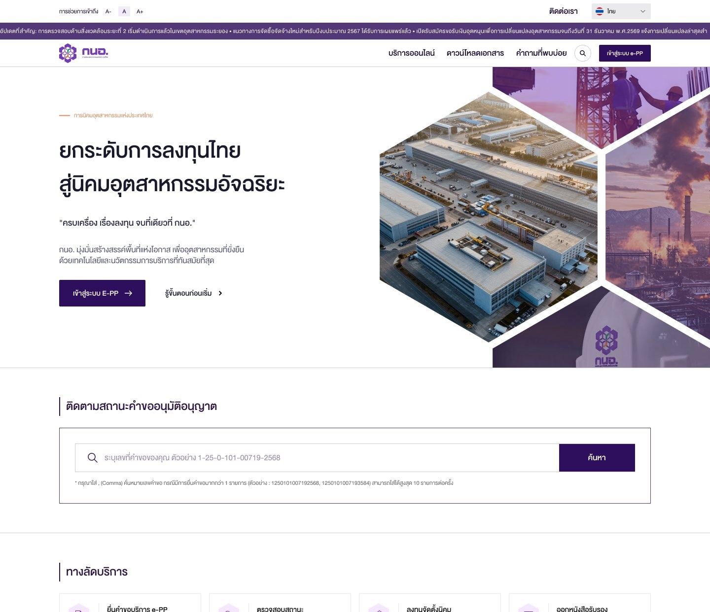
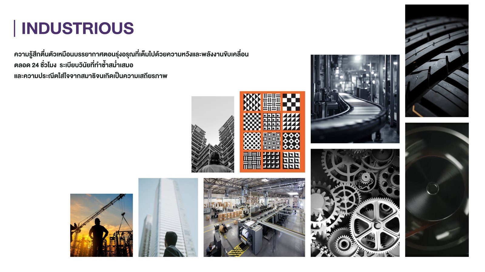
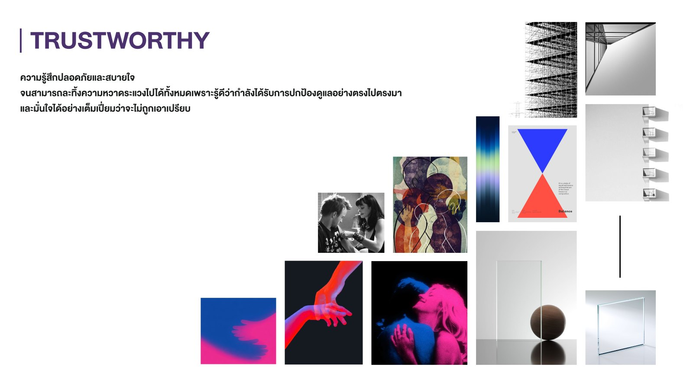
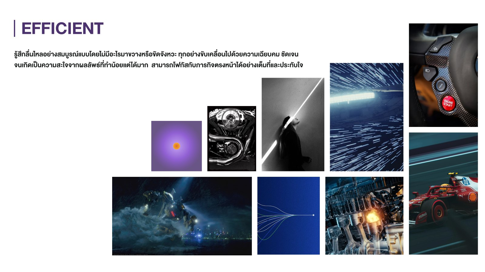
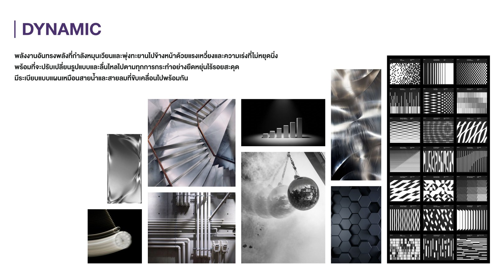
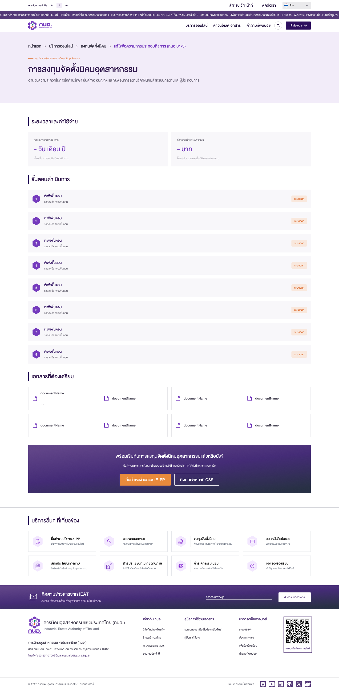
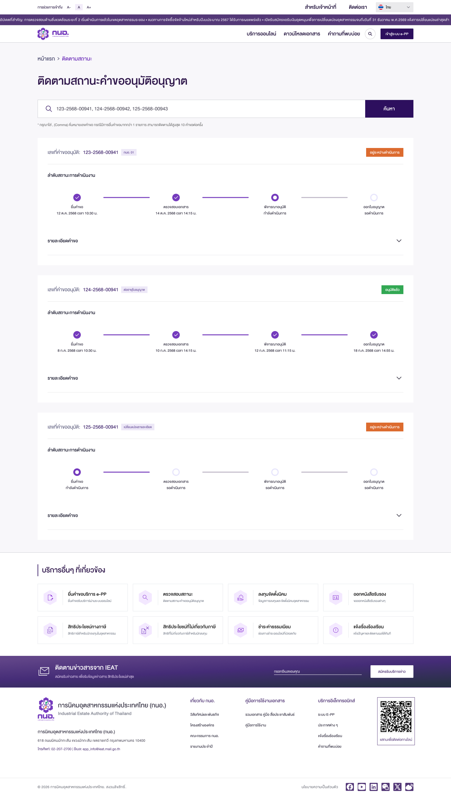
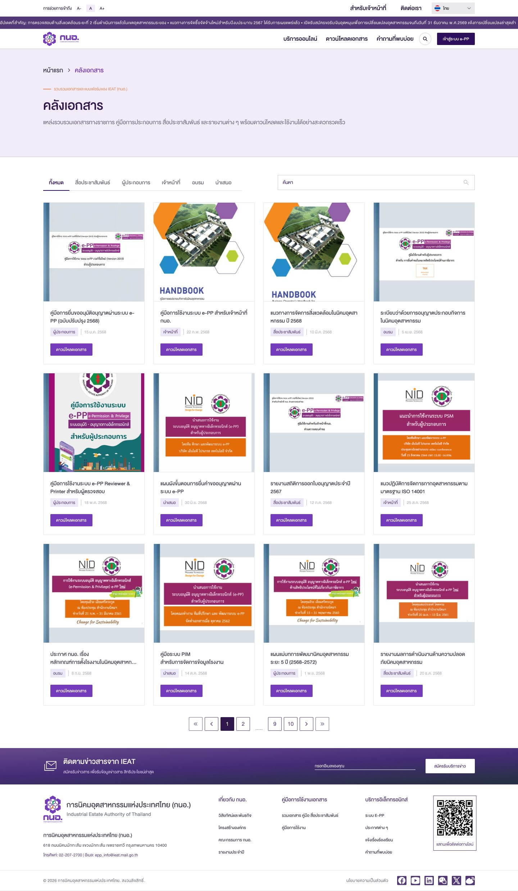

Redesign of the Industrial Estate Authority of Thailand portal and its hand-off to the e-PP permit system.


Four keywords from the brief, each turned into a moodboard before we set the visual direction.

Like dawn at a working estate: hopeful, driven, running 24 hours with steady discipline.

Safe and at ease. People can rely on it because they know they are protected and treated fairly.

Smooth like a well-tuned machine. Every part moves with precision, so nothing is wasted.

Constant forward motion, ready to adapt to new industries and investors.

Where everything above lands: the Task Launcher and status check from Strategy A, the estate map and trust row from Strategy B, drawn in the four-keyword visual direction.




